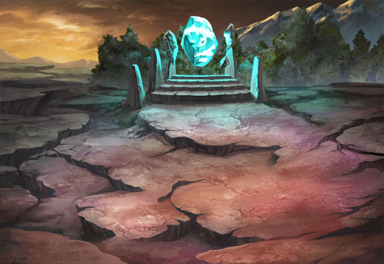

Gabriela
It's dead, Inquisitor.
Adriesta
I'm aware of that! It hasn't finished answering my question.
Gabriela
What question, if I may ask, could a dead demon answer?
Adriesta
What is it to you?
Gabriela
Conversation, mostly. This silent journey bores me, to be honest.
Adriesta
I'm just...looking for answers. I need to know something.
Gabriela
At the expense of our safety, clearly. Thanks to the racket you're making, we must have come across every demon in earshot.
Gabriela
Thankfully, intelligence is the one thing they lack. But I expect that to change soon.
Adriesta
You've fought demons like this before, then?
Gabriela
This and worse, my dear. I doubt you have met the real horrors that the Raug overlords have to offer.
Gabriela
And, to be frank, it is not an experience I care to repeat, nor something I would wish on others.
Adriesta
The Raug overlords? I've heard of them, back in the Academy, but haven't actually met one. Most of the demons I expunged were in small cells, cultists and lackeys for the most part.
Gabriela
Hah, pray you don't, then. Some hoped that they were merely stories--boogeymen in the night. Nightmares for you and your vaunted kind to banish with half-hearted words and empty gestures.
Gabriela
So amusing, yet so sad.
Adriesta
I see. If that's what you think, then...I'll yield to your experience. As for what I'm doing, I'll exercise more care in getting my answers.
Gabriela
You do that, Adriesta. I still have my own score to settle as well, with or without you.
Adriesta
I can see that. We should go.